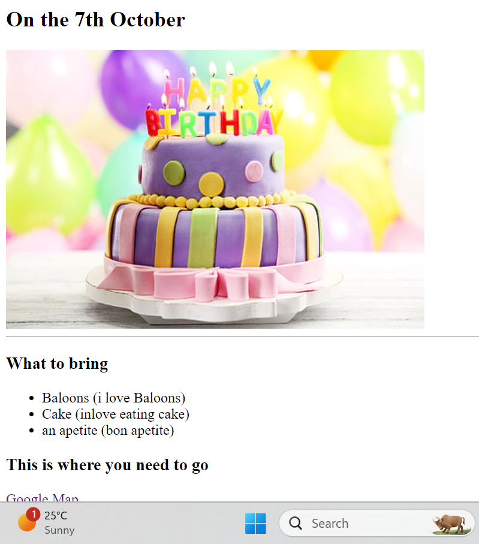

<!-- TODO 1: Create the HTML Boilerplate -->

<!-- TODO 2: Add Your previous projects' HTML into the public folder -->

<!-- TODO 3: Take screenshots of your project previews and add the images to the images folder -->

<!-- TODO 4: Add titles/subtitles etc. -->

<!-- TODO 5: Add a link to the project pages -->

<!-- TODO 6: Add images to show the project previews
HINT for TODO 6: You can use the height attribute set to 200 to make the image smaller:
https://developer.mozilla.org/en-US/docs/Web/HTML/Element/img#attr-height -->

<!-- TODO 7: Add the Contact Me and About Me page links -->
<h1>Mustapha Umar's Portfolio</h1>
<br>
<h2>I'm a Web developer</h2>
<hr>
<a href="../2.4 Movie ranking Project/index.html">Movie ranking project</a> <br>

<a href="../3.4 Birthday Invite Project/index.html" style="margin-left: -10px;">Birthday invite Project</a> <br> <br>
